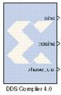

|
|
The Xilinx DDS Compiler block is a direct digital synthesizer, also commonly called a numerically controlled oscillator (NCO). The block uses a lookup table scheme to generate sinusoids. A digital integrator (accumulator) generates a phase that is mapped by the lookup table into the output sinusoidal waveform.To understand the DDS Compiler, it is necessary to know how the block is implemented in FPGA hardware. The following is a block diagram of the DDS Compiler core. The core consist of two main parts, a Phase Generator part and a SIN/COS LUT part. These parts can be used independently or together with an optional dither generator to create a DDS capability. A time-division multi-channel capability is supported with independently configurable phase increment and offset parameters
XtremeDSP slices are used to achieve to maximum performance.
Common Options in Block Parameter Dialog Boxes.
V4.0